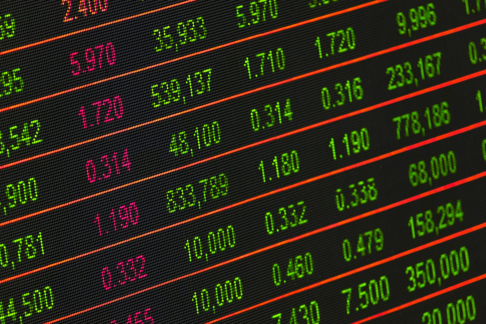

■ 说透 / SHUOTOU · 知览
SUBTITLE
芯片公司赚云厂商的钱，云厂商赚AI公司的钱，AI公司赚VC的钱——钱的源头在哪？

2026年第一季度，全球风险投资砸了2420亿美元到AI公司头上，占同期所有风投的80%，这个数字去年全年才970亿。更离谱的是，其中1880亿——也就是同期全球风投总额的65%——被四家公司拿走了：OpenAI、Anthropic、xAI、Waymo。
四家公司，吃掉了全世界创业投资的三分之二。
我一开始看到这个数字的时候也觉得，这说明AI很值钱嘛，市场在用脚投票。但仔细翻一下这几家的财务状况，你会发现投资人投的不是"它赚了多少"，而是"它还能撑多久"。
OpenAI今年2月关了一轮1100亿美元的融资，估值7300亿，是人类历史上最大的一笔私募。但OpenAI自己的财务预测写得很清楚，2026年计划亏损140亿，2027年亏350亿，2028年亏470亿，盈利目标是2030年。
AI"四大天王"的钱和账
OpenAI：估值 7300 亿美元，年化营收 240 亿，2026 年预计烧掉 170 亿，盈利目标 2030。
Anthropic：年化营收 300 亿美元（2026 年 4 月），已超过 OpenAI，目标 2027 年盈利。
xAI：融资 122 亿美元，营收未公开。
Waymo：仍在大规模烧钱扩张自动驾驶车队。
就是说，全世界最贵的AI创业公司，自己都知道未来三四年赚不了钱，投资人给它这个估值，并不是在赌它明年能赚多少，是在赌它能活到那个赚钱的时刻。
— 01 —
那为啥投资人愿意赌呢？
我觉得这事得分两头说。一头是确实有人在AI上赚到了真金白银，英伟达2026财年营收2159亿美元，净利润超过1200亿，卖铲子的先富起来了。Anthropic的年化营收从2025年1月的10亿美元跑到了2026年4月的300亿，15个月翻了30倍，4月份已经超过了OpenAI。企业端的采用率也不算虚，德勤的报告说88%的受访企业承认AI帮公司增了收入，87%说降了成本。
但这里有个数字你得注意，同一份调研里还有另一行：80%的企业拿不出AI对利润有可衡量影响的证据，95%的企业级AI项目在六个月内没跑出财务回报。
那这两组数据怎么能同时存在呢？
说白了就是，"用了"和"赚了"之间的距离，比我们以为的要远很多。大部分企业确实在用AI，也确实觉得"好像有点用"，但要把"好像有点用"变成财报上的一行数字，中间卡着的东西一大堆。你想啊，一个公司买了Anthropic的API，客服效率确实提升了，但你让CFO把这件事换算成多少钱的利润，他也犯难。
所以投资人赌的是什么？他们赌的是"用了"终究会变成"赚了"，而且这个过程不可逆。这个逻辑本身不算疯狂，互联网当年也是这么走过来的——先烧钱后赚钱。但问题在于规模。
经济学家理查德·伯恩斯坦（Richard Bernstein）算了一笔账：现在全球经济中AI投资占的份额，比2000年互联网泡沫时期的互联网投资占比，还高出大约三分之一。
互联网泡沫那次，最后怎么收场的，大家都知道。
— 02 —
不过这里我不能只讲一面，有个反向证据不能假装看不见。
2000年互联网泡沫破裂的时候，科技板块的远期市盈率大约是50倍，现在呢，大约30倍。而且当年那帮互联网公司，大多数是真的不赚钱，连收入都没有的那种。现在的情况不一样，苹果、微软、谷歌、亚马逊、Meta这五家去年合计自由现金流3500亿美元，然后拿这笔钱反手砸进了AI基础设施——2026年计划的AI资本支出加起来6500到7000亿。
这些公司不是借钱在烧，是赚着钱在烧，这一点确实和2000年不一样。
软银也算是吃到了甜头，2025年4月到12月，光靠投OpenAI这一笔，软银的愿景基金账面赚了170亿美元。孙正义当年被WeWork搞得灰头土脸，这次靠AI翻了身。但我想说的是，账面收益和真金白银之间还有一个叫"退出"的环节，OpenAI又不上市，这170亿什么时候能变成真钱，还是个问号。
AI泡沫和互联网泡沫，到底像不像？
- 像的地方：市场集中度超过 2000 年，AI 投资占 GDP 的比例更高，大量公司还看不到盈利时间表。
- 不像的地方：头部公司确实在赚钱（英伟达净利 1200 亿），科技板块市盈率比当年低了将近一半。
- 最关键的区别：2000 年的公司是借钱烧，2026 年的公司是赚了钱再烧。
那这个"赚了钱再烧"的游戏能不能一直玩下去？
嗯。。我觉得这就是整件事最拧巴的地方了。英伟达赚钱没问题，芯片确实卖出去了，但芯片卖给谁了？卖给了微软、谷歌、亚马逊、Meta这些大厂，大厂拿芯片训模型、建算力。那大厂的AI服务又卖给谁了？一部分卖给了企业客户，一部分卖给了消费者，还有一部分。。卖给了其他AI公司。
我自己盯着这条链看了很久，越看越觉得不踏实：芯片公司赚云厂商的钱，云厂商赚AI创业公司的钱，AI创业公司赚VC的钱，VC赚LP的钱。这条链上的每一环看起来都在赚钱，但钱的源头如果追到底，有多少是真正从非科技行业的客户手里收过来的？
好，到这儿我得说一句公道话，这种质疑有道理，但不完全对。上面提到的29%的财富500强企业确实在为AI产品付费，而且是走完了试点、签了正式合同、上了线的那种。Anthropic的300亿年化营收里，企业客户贡献了相当大一块，不全是科技圈自己的钱。滴滴今年用AI重做了打车调度，订单量暴增了37倍，这些是实打实的行业渗透，不是互相买卖。
但问题是，这些真实的行业采用和7300亿的估值之间，差距仍然太大。
— 03 —
我跟你说个事，现在AI行业的估值模型，跟咱们平时理解的"公司值多少钱"完全不是一套逻辑。
传统估值看市盈率，赚一块钱值多少倍。AI公司的估值看的是另一种东西，营收增速够不够快，现金还能烧多久，在这个赛跑里会不会比对手先倒下。VC现在投种子轮的AI公司，给的估值倍数是10到50倍营收，中位数在20到30倍，一个年收入1000万的AI创业公司，估值可以给到2亿到5亿。你要是拿传统软件公司的标准来看，这根本说不通。
但VC有自己的算法：我不需要你现在赚钱，我需要你证明两件事——第一，你的技术确实在一个大到离谱的市场里有用；第二，你烧钱的效率比别人高，或者你的现金够你烧到市场起来的那天。
Anthropic就是这套逻辑的最佳案例，它的训练成本只有OpenAI的四分之一，但营收已经超过了OpenAI，计划2027年就盈利，比OpenAI早三年。所以哪怕它的估值也高得吓人，市场给它的信心明显更足。
那些拿不到大钱的AI创业公司呢？
Hacker News上有人说了一句挺扎心的话：所有往AI里投了同样多钱的公司，做出来的东西差不多。换句话说，大部分AI创业公司的技术没有什么独特的壁垒，你能做的事情别人换个API也能做。投资人现在要求越来越明确了，年化经常性收入超过100万美元，净收入留存率超过120%，而且护城河必须比"我调了某个大模型的API"深得多。
这就意味着AI创业公司正在经历一轮筛选，拿到大钱的是那几个头部玩家和少数找到真实客户的应用公司，中间那一大批"我也在做AI"的，可能在未来一两年里会非常安静地消失。
我估计不会像2000年互联网泡沫那样轰轰烈烈地崩，更像2022年加息周期里科技股的那种感觉——没有人宣布泡沫破了，但你突然发现很多公司融不到下一轮了，估值打了三折，创始人开始跟你聊"战略调整"。
分析师们把 2026到2028年 标记为AI行业出现大幅调整的最高风险窗口。
你现在看到的2420亿一个季度砸进去，不代表下个季度还是这个数。OpenAI的Sam Altman自己都在2025年说过AI泡沫正在发生，摩根大通的CEO杰米·戴蒙（Jamie Dimon）也警告过"有些AI投资的钱是会打水漂的"。
所以我觉得这事最后大概率不是一声巨响，而是一个渐进的过程，钱慢慢集中到头部那几家，中间层慢慢变安静，大厂继续烧但烧得更谨慎，估值倍数从30倍慢慢回到15倍，Hacker News上的讨论从"AI到底是不是泡沫"变成"你看又一个AI公司关了"。
这条食物链的每一环都在赚钱，但钱的源头不是利润，是信心。
· · ·
ZAYEN知览
说透 · SHUOTOU · 知览